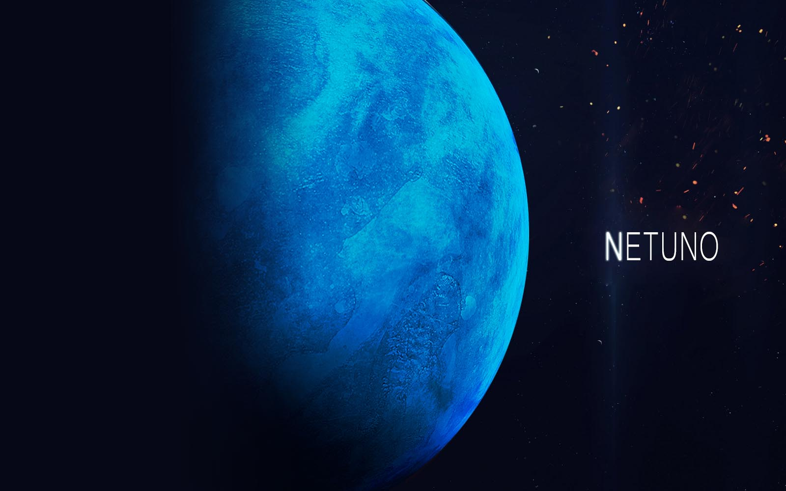

Netuno
Netuno é o oitavo planeta do Sistema Solar, o último a partir do Sol desde a reclassificação de Plutão para a categoria de planeta anão, em 2006. Pertencente ao grupo dos gigantes gasosos, possui um tamanho ligeiramente menor que o de Urano, mas maior massa, equivalente a 17 massas terrestres. Netuno orbita o Sol a uma distância média de 30,1 unidades astronômicas. O planeta é formado por um pequeno núcleo rochoso ao redor do qual encontra-se uma camada formada possivelmente por água, amônia e metano sobre a qual situa-se sua turbulenta atmosfera, constituída predominantemente de hidrogênio e hélio. De fato, notáveis eventos climáticos ocorrem em Netuno, inclusive a formação de diversas camadas de nuvens, tempestades ciclônicas visíveis, como a já extinta Grande Mancha Escura, além dos ventos mais rápidos do Sistema Solar, que atingem mais de 2 000 km/h. A radiação solar recebida por Netuno não seria suficiente para fornecer tamanha energia à turbulenta atmosfera, pelo que descobriu-se que o calor irradiado do centro do planeta possui um papel importante na manutenção destes eventos meteorológicos extremos. A pequena quantidade de metano nas camadas altas da atmosfera é, em parte, responsável pela coloração azul do planeta.

Visto da Terra, Netuno apresenta uma alta magnitude (quanto mais brilhante o astro, menor sua magnitude), sendo impossível observá-lo a olho nu. Suspeitou-se de sua existência somente após a observação cuidadosa da órbita de Urano, que apresentava ligeiras irregularidades por conta da perturbação gravitacional de Netuno. Após análise matemática com conclusões obtidas independentemente por John Couch Adams e Urbain Le Verrier, obtiveram as posições aproximadas de onde o planeta deveria estar na esfera celeste. Após diversas buscas com o auxílio de telescópios, em 23 de setembro de 1846 encontraram o planeta, cujo nome escolhido posteriormente homenageia o deus romano dos mares. Até o presente momento, a única sonda espacial que visitou o planeta foi a Voyager 2, em 1989, cuja passagem permitiu obter fotografias e informações sem precedentes, ainda sendo a principal fonte de dados sobre o que atualmente se conhece sobre o planeta.